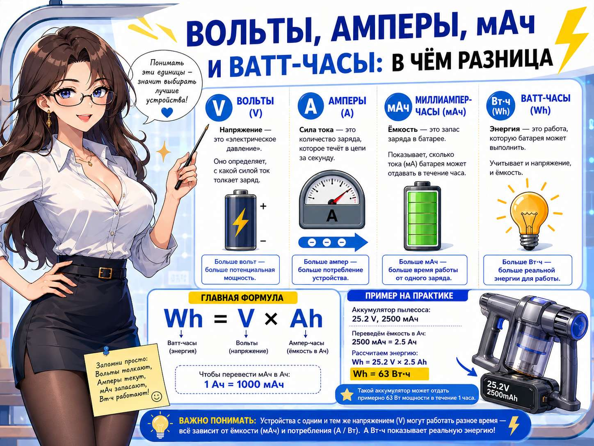

На наклейке аккумулятора можно увидеть 14,4 В, 5200 мАч, 74,9 Вт·ч и иногда допустимый ток в амперах. Эти цифры нельзя складывать или сравнивать напрямую: каждая описывает отдельное свойство батареи.

Вольты: рабочее напряжение
Вольт (В) — единица напряжения. Для аккумулятора пылесоса это одна из главных характеристик совместимости. Батарея должна соответствовать напряжению, на которое рассчитано устройство и его электроника.
Например, аккумуляторы на 14,4 В обычно нельзя без проверки заменять батареями на 21,6 В. Более высокое напряжение не означает «лучше»: неподходящая батарея может не запустить устройство или повредить его.
Амперы: сколько тока потребляет устройство
Ампер (А) показывает силу тока — сколько электрического заряда проходит через цепь в данный момент. Чем тяжелее режим работы, тем больший ток может потребоваться двигателю.
Робот-пылесос расходует больше тока при заезде на ковёр, высокой мощности всасывания, забитой щётке или загрязнённом фильтре. Поэтому изношенный аккумулятор иногда нормально работает на гладком полу, но выключается под повышенной нагрузкой.
Миллиампер-часы: запас заряда
Миллиампер-час (мАч) описывает электрическую ёмкость аккумулятора. 1000 мАч равны 1 А·ч.
Аккумулятор 5200 мАч имеет ёмкость 5,2 А·ч. Но это не значит, что пылесос обязательно проработает 5,2 часа: время зависит от потребляемого тока и режима уборки.
Ватт-часы: реальный запас энергии
Ватт-час (Вт·ч, Wh) показывает, сколько энергии хранит аккумулятор. Этот показатель особенно полезен при сравнении батарей с разным напряжением.
Формула: ватт-часы = вольты × ампер-часы.
| Аккумулятор | Расчёт | Запас энергии |
|---|---|---|
| 14,4 В · 5200 мАч | 14,4 × 5,2 | 74,88 Вт·ч |
| 21,6 В · 4000 мАч | 21,6 × 4,0 | 86,4 Вт·ч |
| 25,2 В · 4000 мАч | 25,2 × 4,0 | 100,8 Вт·ч |
Из таблицы видно: две батареи с одинаковыми 4000 мАч могут хранить разное количество энергии, если у них различается напряжение. Поэтому сравнивать только мАч некорректно.
Как правильно сравнивать аккумуляторы
- Сначала проверяйте напряжение. Оно должно соответствовать устройству.
- Проверяйте форму корпуса, разъём и полярность. Цифр на этикетке недостаточно.
- Сравнивайте мАч только при одинаковом напряжении.
- Для батарей разного напряжения смотрите ватт-часы.
- Учитывайте способность работать под нагрузкой. Большая заявленная ёмкость бесполезна, если батарея сильно просаживается по напряжению.
Частые ошибки покупателей
- выбирать батарею только по максимально крупной цифре мАч;
- считать, что более высокое напряжение всегда улучшает работу;
- сравнивать 5200 мАч при 14,4 В и 5200 мАч при 21,6 В как одинаковые батареи;
- не проверять разъём, корпус и маркировку старого аккумулятора;
- ожидать точное время работы только по данным наклейки.
Главное
- Вольты — напряжение и совместимость.
- Амперы — текущая нагрузка.
- мАч — запас заряда.
- Вт·ч — общий запас энергии.
Для следующего шага прочитайте материал «Что такое ёмкость аккумулятора: мАч простыми словами». А если на недорогой батарее указана подозрительно большая ёмкость, пригодится разбор «9800 мАч за копейки: чудо-аккумулятор или обман?».